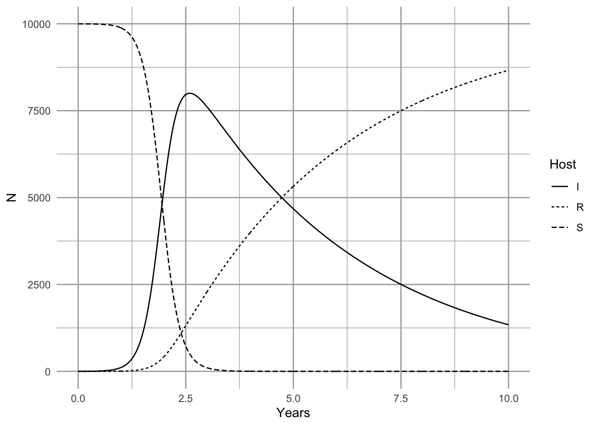

10 Disease
Here we discuss epidemiological disease models. Pathogens cause diseases, and are typically defined as microorganisms (fungi, bacteria, and viruses) with some host specificity, and which undergo population growth within the host.
Our simplest models of disease are funny, in that they don’t model pathogens (the enemy) at all. These famous models, by Kermack and McCormick (1927), keep track of different types of hosts, primarily those with and without diseas that model all \(N\) hosts by keeping track ofwhere \(N=S+I+R\). It is important to note that \(N\), \(S\), \(I\), and \(R\) are . That is, we track numbers of individuals in a fixed area. This is important because it has direct consequences for the spread, or transmission, of disease (McCallum, Barlow, and Hone 2001).
Disease spreads from infected individuals to susceptible individuals. The rate depends to some extent on the number or alternatively, on the fraction of the population that is infected. Resistant individuals are not typically considered vectors of the pathogens, and so increased abundance of resistant individuals slow the transmission rate by diluting the other two groups.
A good starting place is a simple SIR model for a population of constant size, with no immigration or emigration (Ellner and Guckenheimer 2006, @Kermack:1927fk). \[\begin{align*} \tag{10.1} \frac{d S}{d t} &= -\beta IS\\ \frac{d I}{d t} &=\beta IS - \gamma I\\ \frac{d R}{d t} &= \gamma I \end{align*}\]
# Here we create the function for the simple SIR model.
SIR <- function(t, y, p) {
with( as.list(c(y, p)), {
dS.dt <- -B*I*S
dI.dt <- B*I*S - g*I
dR.dt <- g*I
return( list(c(dS.dt, dI.dt, dR.dt)) )
} )
}In this model, the transmission coefficient, \(\beta\), describes the instantaneous rate at which the number of infected hosts increases per infected individual. It is directly analogous to the attack rate of type I prey-dependent models. Recall that it is based on the law of mass action, borrowed from physics and chemistry. It assumes that the rate at which events occur (new infections) is due to complete and random mixing of the reactants (\(S,\,I\)), and the rate at which the reactants collide and react can be described by a single constant, \(\beta\). As density of either type of molecule increases, so too does the rate of interaction. In prey-dependent predation, we referred to \(aN\) as a linear functional response; here we refer to \(\beta S\) as the density-dependent transmission function. The transmission rate is the instantaneous rate for the number of new infections or cases per unit time (McCallum, Barlow, and Hone 2001).
Resistant individuals might be resistant for one of two reasons. They may die, or they may develop immunities. In either case, we assume they cannot catch the disease again, nor spread the disease. As this model assumses a constant population size, we continue to count all \(R\) individuals, regardless of whether they become immune or die.
The individuals become resistant to this disease at the constant per capita rate, \(\gamma\). The rate \(\gamma\) is also the inverse of the mean residence time, or , of the disease.
Disease is the number of new infections or cases occurring over a defined time interval. This definition makes incidence a discrete-time version of transmission rate. is the fraction of the population that is infected \(I/N\).
A common question in disease ecology is to ask under what conditions will an outbreak occur. Another way of asking that is to ask what conditions cause \(\dot{I}>0\). We can set \(dI/dt > 0\) and solve for something interesting about what is required for an outbreak to occur. \[\begin{align} 0 & < \beta IS - \gamma I\notag\\ \frac{\gamma}{\beta} &< S \end{align}\] What does this tell us? First, because we could divide through by \(I\), it means that if no one is infected, then an outbreak can’t happen — it is the usual, but typically unstable equilibrium at 0. Second, it tells us that an outbreak will occur if the absolute density of susceptibles53 is greater than \(\gamma / \beta\). If we consider the pre-outbreak situation where \(S \approx N\), then simply making the population size (and density) low enough can halt the spread of disease. This is why outbreaks tend to occur in high density populations, such as agricultural hosts (e.g., cattle), or historically in urban human populations, or in schools.
Vaccinations are a way to reduce \(S\) without reducing \(N\). If a sufficient number of individuals in the population are vaccinated to reduce \(S\) below \(\gamma / \beta\), this tends to protect the unvaccinated individuals as well.
Another common representation of this is called the force of infection or basic reproductive rate of the disease. If we assume that in a large population \(S \approx N\), then rearranging eq. (10.2) gives us \[\begin{equation} \tag{10.2} R_0=\frac{\beta N}{\gamma} \end{equation}\] where \(R_0\) is the basic reproductive rate of the disease. If \(R_0 > 1\), then an outbreak (i.e., disease growth) is plausible. This is analogous to the finite rate of increase of a population where \(\lambda>1\).
Here we model the outbreak of a nonlethal disease (e.g., a new cold virus in winter on a university campus). We assume that the disease is neither life-threatening, and nor is anyone resistant, thus \(R_{t=0}=0\). We can investigate the SIR model by pretending that, as is often the case, we begin with a largely uninfected population and \(t=0\), so \(I_0=1\) and \(S_0\approx N\). We first set parameters. Let’s imagine that a
N <- 10^4; I <- R <- 1; S <- N - I - R
y <- c(S=S, I=I, R=R)
parms <- c(B=.01, g=4)
# Next we integrate for three months.
months <- seq(0,3, by=0.01)
out1 <- data.frame( ode(y, months, SIR, parms) )
out2 <- pivot_longer(out1, cols=S:R, names_to="Host", values_to="N")
ggplot(out2, aes(time, N, linetype=Host)) + geom_line() + labs(x="Months")
# Emerald ash borer?
N <- 10^4; I <- R <- 1; S <- N - I - R
y <- c(S=S, I=I, R=R)
# ash death takes about 4 years to die,
# meaning it is infected for about 4 years
duration <- 4
gamma = 1/duration
# question = how to estimate beta?
beta = .0005
parms <- c(B=beta, g=gamma)
years <- seq(0,10, by=0.01)
out1 <- data.table( ode(y, years, SIR, parms) )
out2 <- pivot_longer(out1, cols=S:R, names_to="Host", values_to="N")
ggplot(out2, aes(time, N, linetype=Host)) + geom_line() + labs(x="Years") It is important at this point to reiterate a point we made above — these conclusions apply when S, I, and R are densities (McCallum, Barlow, and Hone 2001). If you increase population size but also the area associated with the population, then you have not changed density. If population size only increases, but density is constant, then interaction frequency does not increase. Some populations may increase in density as they increase is size, but some may not. Mass action dynamics are the same as type I functional response as predators — there is a constant linear increase in per capita infection rate as the number of susceptible hosts increases.
10.0.1 SIR with frequency–dependent transmission
In addition to density dependent transmission, investigators have used other forms of density dependence. One the most common is typically known as frequency–dependent transmission, where transmission depends on the prevalence, or the frequency of infecteds in the population, \(I/N\). \[\begin{align} \frac{d S}{d t} &= - \beta \frac{SI}{N} \#eq:SIRfd1\\ \frac{d I}{d t} &= \beta \frac{SI}{N} - \gamma I \#eq:SIRfd2\\ \frac{d I}{d t} &= \gamma I. \#eq:SIRfd2 \end{align}\]
Here we create the function for the system of ODEs in eq. .
SIRf <- function(t, y, p) {
N <- sum(y)
with( as.list(c(y,p)), {
dS.dt <- -B*I*S/N
dI.dt <- B*I*S/N - g*I
dR.dt <- g*I
return( list(c(dS.dt, dI.dt, dR.dt)) )
} )
}The proper form of the transmission function depends on the mode of transmission (McCallum, Barlow, and Hone 2001). Imagine two people are on an elevator, one sick (infected), and one healthy but susceptible, and then the sick individual sneezes (Ellner and Guckenheimer 2006). This results in a particular probability, \(\beta\), that the susceptible individual gets infected. Now imagine resistant individuals get on the elevator — should adding resistant individuals change the probability that the susceptible individual gets infected? Note what has and has not changed. First, with the addition of a resistant individual, \(N\) has increased, and prevalence, \(I/N\), has decreased. However, the densities of \(I\) and \(S\) remain the same (1 per elevator). What might happen? There are at least two possible outcomes:
- If sufficient amounts of the virus spread evenly throughout the elevator, adding a resistant individual does not change the probability of the susceptible becoming sick, and the rate of spread will remain dependent on the densities of \(I\) and \(S\) — the rate will not vary with declining prevalence.
- If only the immediate neighbor gets exposed to the pathogen, then the probability that the neighbor is susceptible declines with increasing \(R\), and thus the rate of spread will decline with declining prevalence.
It is fairly easy to imagine different scenarios, and it is very important to justify the form of the function.
R <- 0; S <- I <- 1000; Ss <- Is <- seq(1, S, length=11); N <- S+I+R
betaD <- 0.1; betaF <- betaD*N
# sapply will calculate the transmission functions for each combination of
# the values of $I$ and $S$.
mat1 <- sapply(Is, function(i) betaD * i * Ss)
mat2 <- sapply(Is, function(i) betaF * i * Ss / (i + Ss + R) )
# Now we plot these matrices.
{
layout(matrix(1:2, nr=1))
persp(mat1, theta=20, phi=15, r=10, zlim=c(0,betaD*S*I),
main="Density Dependent",
xlab="I", ylab="S", zlab="Transmission Rate")
persp(mat2, theta=20, phi=15, r=10, zlim=c(0,betaF*S*I/N),
main="Frequency Dependent",
xlab="I", ylab="S", zlab="Transmission Rate")
}
10.0.2 Antonovic et al. Metapopulation disease dynamics
Silene alba and Microbotryum violacea Proportion of subpopulations that have an infected plant increases with the size of the subpopulation
Disease prevalence declines with subpopulation size. This is characteristic of frequency-dependent transmission.
10.0.3 Lyme Disease
Van Buskirk and Ostfeld 1995 Eco. Appl. Borrelia burgdorferi spirochete Blacklegged tick Ixodes scapularis Peromyscus leucopus Whitefooted mouse Whitetailed deer Oedicoilius virginiana spring 1: eggs summer 1: larva on intermediate host - small mammal or bird spring 2: nymph a new intermediate host small mammal or bird summer 2: drops off host 2, seeks definitive host (tyupically deer); most dangerous to humans fall 2: adult on deer (low risk to humans)
host competence: whitefooted mice vs. chipmunks and birds
References
Ellner, S P, and J Guckenheimer. 2006. Dynamic Models in Biology. Princeton University Press, Princeton, NJ.
Kermack, W O, and W G McCormick. 1927. “A contribution to the mathematical theory of epidemics.” Proceedings of the Royal Society, Series A 115: 700–721.
McCallum, Hamish, Nigel Barlow, and Jim Hone. 2001. “How should pathogen transmission be modelled?” Trends in Ecology and Evolution 16 (6): 295–300.
\(S\) is the absolute density, whereas \(S/N\) is the relative density.↩︎